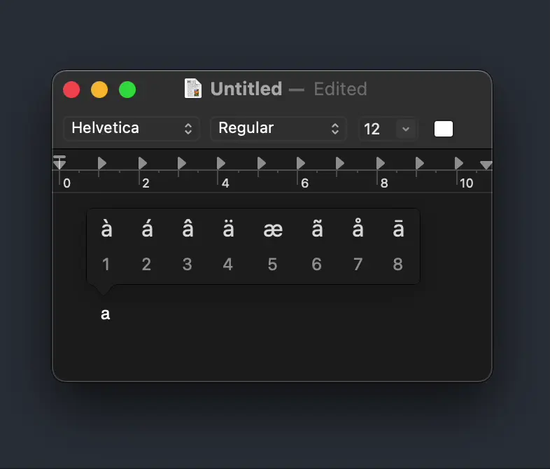
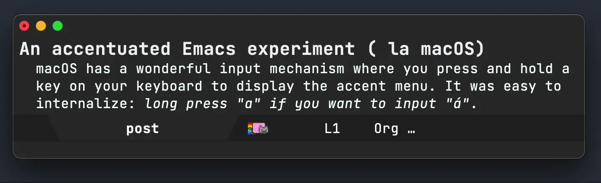
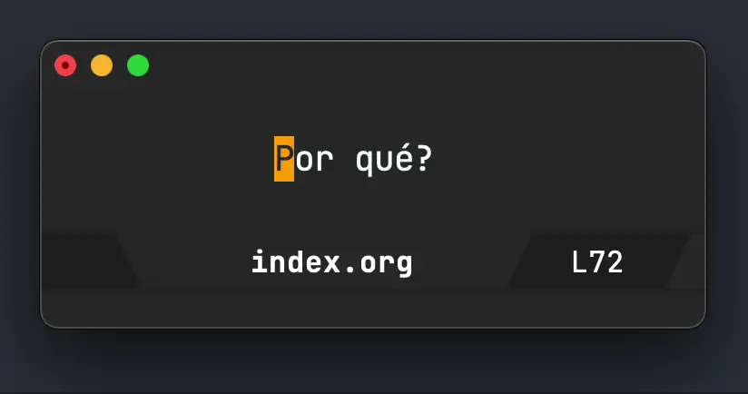

Álvaro Ramírez
An accentuated Emacs experiment (à la macOS)
macOS has a wonderful input mechanism where you press and hold a key on your keyboard to display the accent menu. It's easy to internalize: long press "a" if you want to input "á".

On Emacs, C-x 8 ' a would be the equivalent, but it just didn't stick for me. Fortunately, there's an alternative, using dead keys. Mickey Petersen gives a wonderful introduction. Having said all this, I still longed for macOS's input mechanism.
Thanks to Christian Tietze's post, I discovered the accent package. While it doesn't handle press-and-hold, it does the heavy lifting of offering a menu with character options. If I could just bring that press-and-hold…
My initial attempt was to use key chords (via use-package):
(use-package accent :ensure t :chords (("aa" . ar/spanish-accent-menu) ("ee" . ar/spanish-accent-menu) ("ii" . ar/spanish-accent-menu) ("oo" . ar/spanish-accent-menu) ("uu" . ar/spanish-accent-menu) ("AA" . ar/spanish-accent-menu) ("EE" . ar/spanish-accent-menu) ("II" . ar/spanish-accent-menu) ("OO" . ar/spanish-accent-menu) ("UU" . ar/spanish-accent-menu) ("nn" . ar/spanish-accent-menu) ("NN" . ar/spanish-accent-menu) ("??" . ar/spanish-accent-menu) ("!!" . ar/spanish-accent-menu)) :config (defun ar/spanish-accent-menu () (interactive) (let ((accent-diacritics '((a (á)) (e (é)) (i (í)) (o (ó)) (u (ú ü)) (A (Á)) (E (É)) (I (Í)) (O (Ó)) (U (Ú Ü)) (n (ñ)) (N (Ñ)) (\? (¿)) (! (¡))))) (ignore-error quit (accent-menu)))))
While it kinda works, "nn" quickly got in the way of my n/p magit navigation. Perhaps key chords are still an option for someone who doesn't need the "nn" chord, but being a Spanish speaker, I need that "ñ" from long "n" presses!
I'm now trying a little experiment using an after-change-functions hook to monitor text input and present the accent menu. I'm sure there's a better way (anyone with ideas?). For now, it gives me something akin to press-and-hold.

I'm wrapping the hook with a minor mode to easily enable/disable whenever needed. I'm also overriding accent-diacritics to only include the characters I typically need.
(use-package accent :ensure t :hook ((text-mode . accent-menu-mode) (org-mode . accent-menu-mode) (message-mode . accent-menu-mode)) :config (setq accent-diacritics '((a (á)) (e (é)) (i (í)) (o (ó)) (u (ú ü)) (A (Á)) (E (É)) (I (Í)) (O (Ó)) (U (Ú Ü)) (n (ñ)) (N (Ñ)) (\? (¿)) (! (¡)))) (defvar accent-menu-monitor--last-edit-time nil) (define-minor-mode accent-menu-mode "Toggle `accent-menu' if repeated keys are detected." :lighter " accent-menu mode" (if accent-menu-mode (progn (remove-hook 'after-change-functions #'accent-menu-monitor--text-change t) (add-hook 'after-change-functions #'accent-menu-monitor--text-change 0 t)) (remove-hook 'after-change-functions #'accent-menu-monitor--text-change t))) (defun accent-menu-monitor--text-change (beginning end length) "Monitors text change BEGINNING, END, and LENGTH." (let ((last-edit-time accent-menu-monitor--last-edit-time) (edit-time (float-time))) (when (and (> end beginning) (eq length 0) last-edit-time ;; 0.27 seems to work for my macOS keyboard settings. ;; Key Repeat: Fast | Delay Until Repeat: Short. (< (- edit-time last-edit-time) 0.27) (float-time (time-subtract (current-time) edit-time)) (accent-menu-monitor--buffer-char-string (1- beginning)) (seq-contains-p (mapcar (lambda (item) (symbol-name (car item))) accent-diacritics) (accent-menu-monitor--buffer-char-string beginning)) (string-equal (accent-menu-monitor--buffer-char-string (1- beginning)) (accent-menu-monitor--buffer-char-string beginning))) (delete-backward-char 1) (ignore-error quit (accent-menu))) (setq accent-menu-monitor--last-edit-time edit-time))) (defun accent-menu-monitor--buffer-char-string (at) (when (> at 0) (buffer-substring-no-properties at (+ at 1)))))
As a bonus, it ocurred to me that I could use the same press-and-hold to handle question marks in Spanish (from my UK keyboard).
